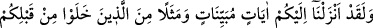
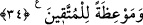

için olduğu gibi bâtındaki sultanlık da öyledir.
Kerem sâhibi kimselerin kâsesinden yerin de bir nasibi vardır.
İkincisi: Azgın nefisler, Allah’ın tevfîk ve yardımıyla tevbe ve kullukla günahlardan
uzak kalmak istediklerinde, nefsânî arzular uğruna onları fesâda zorlamamak lâzımdır.
Bilesin ki mânevî nesebi, rahmânî nefes sâhibi kimselerden birine ulaşmayan,
kendisinde kemâl ve kemâle erdirme sıfatlarının bulunduğunu iddiâ eden kimse
hakîkatte zinâkârdır. Terbiyesi altında olanlar da helâk olmuştur. Çünkü o veled-i
zinâdır. Belki de inad, garaz, maraz ve hevâsına uymak yüzünden bâzı tâlibleri dâvâ
ehlinin kapısına gidip gelmeye zorlayan ve hak ehlinin kapısından geri çevirenleri
görmüşsündür. Aslında o kimse o tâlibi zinâya zorlamaktadır. Çünkü bâtıl ehlinin
kapısına yapışan kimse, istidâdı yumurtanın bozulması gibi bozulan veled-i zinâ gibi
helâk olur. Allah Teâlâ’dan bizi kâfirlerin hilesinden ve tuzak kuranların tuzaklarından
korumasını niyaz ederiz.
34. Andolsun ki biz size (gerekeni) açık açık bildiren âyetler, sizden önce yaşayıp
gitmiş olanlardan örnekler ve takvâya ulaşmış kimseler için öğütler indirdik.
“Andolsun ki biz size (gerekeni) açık açık bildiren âyetler” indirdik. Yâni Allah’a
yemin olsun ki biz size bu sûrede sizin açıklanmasına ihtiyaç duyduğunuz hadleri, diğer
hükümleri ve edebleri açıklayan âyetler indirdik. ‘Açıklama’ hakîkatte Allah Teâlâ’ya
âiddir. Onun âyetlere isnâdı ise mecâzîdir.
“Sizden önce yaşayıp gitmiş olanlardan örnekler” indirdik. Yine bu sûrede sizden
önce yaşamış olanlara âid hayret verici kıssalardan, geçmiş kitaplarda anlatılan
misâllerden ve peygamberlerin ağızlarından dökülen sözlerden örnekler indirdik.
Meselâ Hz. Âişe (r.anhâ)’nın anlatılan kıssası, dikkat çekici ve ibret verici oluşu
bakımından Yûsuf ve Meryem kıssalarına tam bir uygunluk arzeder. Çünkü her ikisinin
kıssasında da zinâdan uzak olan birinin zinâ töhmeti altında tutulması zikredilmiştir.
İkisi de tertemiz oldukları halde Yûsuf’a Züleyha, Meryem’e de yahudiler zinâ
isnâdında bulundular.
“Ve takvâya ulaşmış kimseler için” öğüt almanız, haramlardan, mekruhlardah ve
diğer güzel edebleri ihlâl edecek şeylerden kaçınmanız için “öğütler indirdik.”
İndirilmesinin şumûlü bakımından öğütler herkese şâmil olmakla birlikte burada
müttakîlerin tahsis edilmesi, bu öğütlerden faydalananların onlar olması sebebiyledir.
et-Te’vîlâtü’n-Necmiyye’de der ki: “Öncekilerin başına gelen belâ ve musîbetlerden
sakınmak isteyenlerin istifâdesi için bu öğütleri indirdik. Çünkü hoşbaht kimse,
başkasından öğüt ve ibret alan kimsedir.”